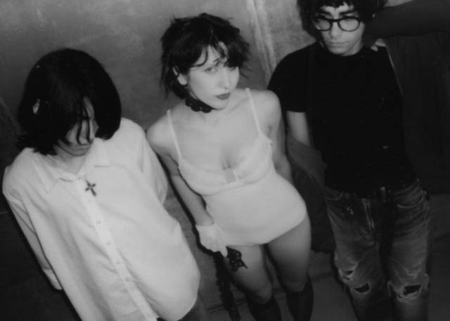
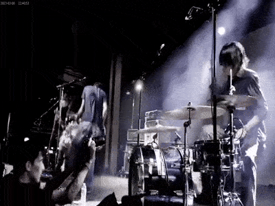
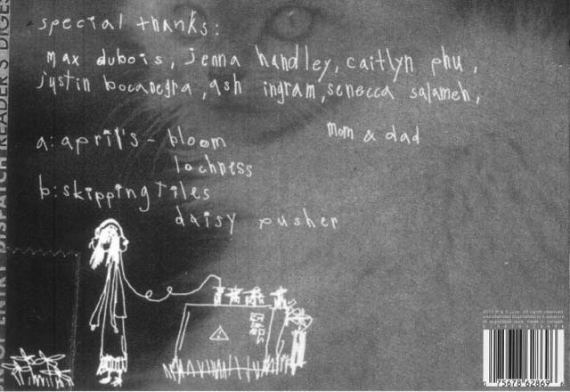

So why this band, and why now? What has resonated so deeply? As I learned, julie’s three members—Alexandria Elizabeth (vocals and bass), Keyan Pourzand (vocals and guitar), and Dillon Lee (drums)—control nearly every aspect of their creative vision. Though all in their early 20s, they boast an impressive range of skills. A glance at their side projects and Tumblrs reveals their diverse artistic interests, spanning collage work, graphic design, poetry, architecture, and more. During our conversation, julie explained how they maintain full control over their albums—from crafting the sonic palette to making the album art, choosing collaborators, and directing their own videos. It’s a crash course in authentic creation, blending music history and the avant-garde with virality and mainstream success.
What is the last dream you remember vividly that stuck with you?
Alexandria Elizabeth— Gosh. I wrote this down. It was on tour. Okay, so I threw a party at my mom’s house—my childhood house. A lot of people came, and it was really crazy. The house got destroyed, and the entire back wall was blown off. When my mom came home, she wasn’t mad, but she was really matter-of-fact. She said, “Bro, don’t throw parties here because you always end up blowing off the back wall.” And I was like, “What the heck?” It was so strange because I blacked out between the party ending and my mom arriving. I wasn’t super guilty, though, because she wasn’t upset, just... practical about it.
Do you guys think dreams have unconscious meaning?
Dillon Lee— I think they definitely do.I was just reading Carl Jung on dreams during this tour. I keep having these recurring stress dreams where we’re setting up for a show, but it takes forever to set up my drums, and the crowd is just waiting there. It’s so slow, and everything is delayed. I also get bug stress dreams, where oversized bugs are chasing me. It’s pretty gross.

when did you guys all meet?
I saw Dillon around the Orange County scene. He dressed really sick and stood out. We had mutual friends, and he played in one of my friend’s bands for a while. I didn’t know about Keyan until Dillon DM’d me like, “Wanna be in my band?” I was like, “Okay.” I met Keyan when I came to his house, and he helped me get my bass out of the car. I remember thinking, “Oh, they’re so cool.”
How have you grown as friends and as a band in the past couple of years?
Keyan Pourzand— It went from best friends to family. We’re like siblings.We’re all really annoying all the time. For better and for worse. We’ll argue with each other like crazy. And then we’ll make up five hours later. Sometimes it means nothing because it’s just arguing with your sister.
you guys fight about stupid shit, or like “Oh, I don’t think we should put that much reverb on this.”
Stupid shit. And then also, well, that’s [reverb] also kind of stupid shit.I remember at the boxing ring before we played we really got into it about Dillon’s drum kit and whether it should be five inches forward or back. And for some reason we were really pissed. We were all fighting. I was like, bro, why’d you do that? I put the amps back there for reason. And I was like, whatever.And then I was mediating it.
When it comes to your stage presence, is it planned, does it come naturally?
Mostly natural. We definitely do talk about performing on stage and try to be intentional with it. It’s not like it’s choreographed when we play the show, all of that’s in the moment, but we do think about how we set up the amps on stage and such.
As artists, how much do you want to communicate with the audience? I’ve seen performers that don’t say a thing to the audience, and then others that are yappers. They’re doing crowd work. It’s like standup for them.
It’s not in me. I can’t work a crowd in a comedic way. I can sing though.
Do you improvise on stage?
We’ll extend certain songs or in between the songs we’ll do these interludes and play off each other’s noise. We’re pretty much making soundscapes. Most of the improvisation comes from in-between the songs when we have samplers playing. And then just trying to play with whatever we’re hearing mixed with our instruments in a very minimalist way.
Dillon, have you always drawn, and when did you start?
I’ve been drawing since I was three or four years old. When my mom was my age, she went to art school and she would always have her drawings hanging up. Originally that’s what I wanted to do as a career at first because my mom got me the Gorillaz’s Demon Days CD and I thought those characters were so sick. I wanted to make people’s album covers for a living.

When did you first doodle the character in the cover art?
When I created the first Macy drawing, I was in my English class in high school and wasn’t doing it intentionally. I didn’t think, This is going to be for my band. Our friend was always like, Bro, she’s so fire. In a vague sense, this girl seemed like a highly appropriate representation for what I wanted to communicate at the time. Eventually we used it for a lot of art when we first started putting out music and then it became pretty seamless.
Do your other disciplines and artistic mediums, like your architecture studies, influence your song structure?
A lot of what you’re taught in architecture school is balance in structure; how to carefully craft the composition of what you’re creating.In art design and music theory in general, which is what I was formally educated in, a big thing is the idea of a repeating thematic element that recurs throughout a piece of work. We talk about that when designing buildings, but it’s also very common in music, like when there’s a certain melody or theme that keeps coming back. That’s how you make a song!
I noticed that the song structures on the new record are really varied.
Yeah, that was intentional. I think it’s interesting when I listen to certain music and the song structure feels like this rollercoaster, but it also doesn’t feel like it’s just getting away from you or falling apart. I like when it’s done in a good way, and it goes to a lot of different places, but still feels congealed into this singular thing. We wanted to play with that.
Let’s talk about “Feminine Adornment“. It’s one of the only ones on the record that’s just Alex singing. What does the title represent?
The title was an excerpt. I was reading Anti-Oedipus by [Giles] Deleuze. It was a random quote that I really liked—it was actually the full title before. Throughout my life, I’ve played with masculinity and androgyny in my fashion and how I portray myself. But recently, I went through a phase where I was drawn back to femininity after a year of avoiding makeup or anything feminine. Doing those things brought me a sense of peace. It wasn’t about trying to achieve femininity but about self-soothing. I found myself reaching for feminine textiles, sewing, creating things, makeup—those processes became comforting. I wish I could find the full quote.
I’d be cool if you did the Fiona Apple thing and made the title a giant poem.
You’ve mentioned that image branding and music hold equal importance for you. Do you think this ever detracts from the music and artistry itself? And does it affect your creative process?
No, it just takes longer for us. That’s why our timeline—besides the fact that we were in architecture school—takes so long. We’re making music and art simultaneously, putting equal effort into both.
Do you think about how to package and present it before, during, or after creating the music?
During. Yeah, definitely during. Like Keyan said, that’s part of why it takes so long. Everything is really thought through. Perception, image branding, all of that is important. We don’t want to be misrepresented.
Would you ever hand the reins off to a director, filmmaker, or artist, or do you want to control every aspect of your image?
We try to maintain as much control as possible, but sometimes we work with others because we don’t......have the bandwidth to do everything ourselves. There are a few photographers, videographers, and creatives we connect with, where we understand each other.
Keyan, you’ve mentioned you started playing music as a stress relief. Now that the band is scaling up and becoming your job, do you worry it might become a source of stress?
That’s funny. It has been a source of stress for four years now. It’s strange, honestly. I started playing guitar to relieve stress, but now it’s part of the stress, but that doesn’t stop me from playing guitar to relieve that same stress. It’s a cycle. I’ll get stressed, start playing guitar to relax, but then I’ll shift into writing, which stresses me out, so I put the guitar down, and then later pick it back up to release stress again. It’s very weird.
Do you find that stress relief shifts into other mediums where there’s less pressure, like side projects that don’t have as big of a spotlight?
Yeah, definitely. I spend a lot of time working with electronics and making weird little sculptures out of scrap metal and odd things like that. I do a lot of graphic design too, and we all work on the band’s artwork together. I’m always on the computer with Photoshop, working on album covers or posters. It’s all about shifting gears whenever I can, so I’m not constantly freaking out.
with famous people sounds stressful.
Power outage, amp on fire.
Wait, what happened?
We were playing our last show with Faye Webster, and midway through a song, people started raising their arms. I was confused, thinking, “Why is everyone’s hands up?” Then I turned around, and my amp was on fire. I was like, “Oh, okay.”That was pretty alarming. But fun. Then we were like, “Okay, I guess we should play the song now.” We put out the fire and just kept playing. It was actually pretty fun. Then, the other day in Boulder, Colorado, just before we were about to start, the power went out. We were all in the green room, and at first, it was funny. Then it became, “Oh no, what if we can’t play?” because the line outside wrapped around the corner. People camped out for three hours. Only a few left, which was shocking and really sweet to see.They were just about to refund everyone. The venue staff came in and said, “Okay, guys, we’re probably going to call it quits. The power won’t come back in time.“ We were accepting defeat and started packing up. I was literally packing my suitcase. Then the lights came back on, and we had to switch from packing up to getting ready to play the show. It turned out to be an amazing show. Super packed with a lot of moshing. It was wild.It really touched my heart that the people of Boulder, Colorado stuck around for us.back to top